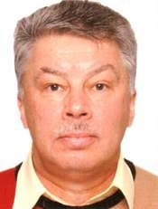

Ilya Krive
Head of the Department of Theoretical Physics.

Graduated from Kharkov State University in 1972.
PhD Phys & Math, Kiev Institute for Theoretical Physics, 1977.
DSc Phys & Math, Kharkov State University, 1988.
Started work at ILTPE in 1992.
krive@ilt.kharkov.ua
Total number of publications – 180, including
14 review papers.
Participated in more than 50 domestic and international conferences.
Areas of specialization:
Condensed matter physics (theory), quantum field theory.
h-index 17.
Most significant papers:
- I.V.Krive, A.D.Linde, On the vacuum stability in sigma model, Nuclear Physics B, v.117, p.265 (1976).
- L.É.Gendenshteĭn, I.V.Krive, Supersymmetry in quantum mechanics, Physics-Uspekhi, v.28, p.645 (1985).
- I.V.Krive, A.S.Rozhavskiĭ, Fractional charge in quantum field theory and solid-state physics, Soviet Physics Uspekhi, v.30, p.370 (1987).
- I.V.Krive, O.B.Zaslavsky, Macroscopic quantum tunnelling in antiferromagnets, J.Phys.: Cond.Matt., v.2, p.9457 (1990).
- E.N.Bogachek, I.V.Krive, I.O.Kulik, A.S.Rozhavsky, Instanton Aharonov-Bohm effect and macroscopic quantum coherence in charge-density-wave systems, Phys.Rev.B v.42, p.7614 (1990).
- I.V.Krive, S.A.Naftulin, Dynamical symmetry breaking and phase transitions in a three-dimensional Gross-Neveu model in a strong magnetic field, Phys.Rev.D, v.46, p.2737 (1992).
- I.V.Krive, A.M.Kadigrobov, R.I.Shekhter, M.Jonson, Influence of the Rashba effect on the Josephson current through a superconductor/Luttinger liquid/superconductor tunnel junction, Phys.Rev.B, v.71, p.214516 (2005).
- I.V.Krive, R.I.Shekhter, M.Jonson, Carbon “peapods”— a new tunable nanoscale graphitic structure, Low Temperature Physics, v.32, p.887 (2006).
- I.V.Krive, L.Y.Gorelik, R.I.Shekhter, M.Jonson, Chiral symmetry breaking and the Josephson current in a ballistic superconductor–quantum wire–superconductor junction, Low Temperature Physics, v.30, p.398.
- P.Utko, R.Ferone, I.V.Krive, R.I.Shekhter, M.Jonson, M.Monthioux, L.Noé, Nanoelectromechanical coupling in fullerene peapods probed by resonant electrical transport experiments, Nature Communications, v.1, p.37 (2010).
- A.V.Parafilo, I.V.Krive, R.I.Shekhter, Y.W.Park, M.Jonson, Polaronic effects and thermally enhanced weak superconductivity, Phys.Rev.B, v.89, p.115138 (2014).
- S.I.Kulinich, L.Y.Gorelik, A.N.Kalinenko, I.V.Krive, R.I.Shekhter, Y.W.Park, M.Jonson, Single-electron shuttle based on electron spin, Phys.Rev.Lett. v.112, p.117206 (2014).
- O.A.Ilinskaya, S.I.Kulinich, I.V.Krive, R.I.Shekhter, Y.W.Park, M.Jonson, Shuttling of spin polarized electrons in molecular transistors, Synthetic Metals, v.216, p.83 (2016).
- O.A.Ilinskaya, S.I.Kulinich, I.V.Krive, R.I.Shekhter, H.C.Park, M.Jonson, Mechanically induced thermal breakdown in magnetic shuttle structures, New Journal of Physics, v.20, p.063036 (2018).